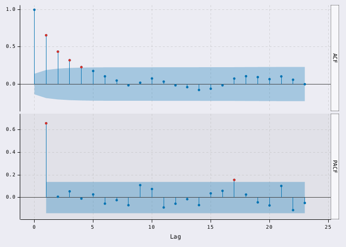
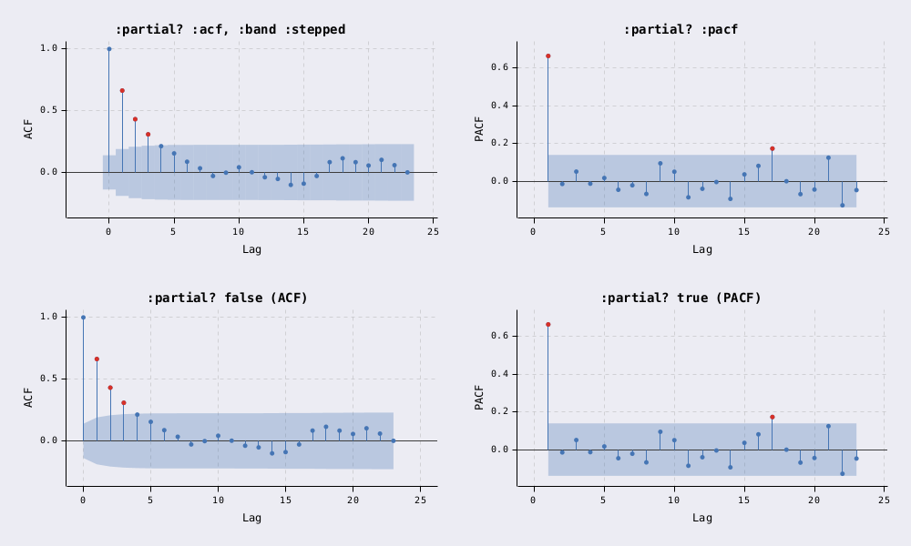
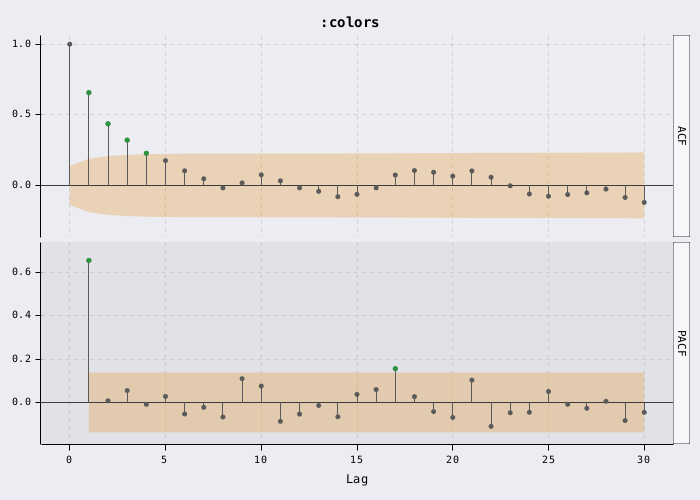
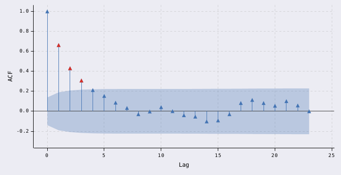
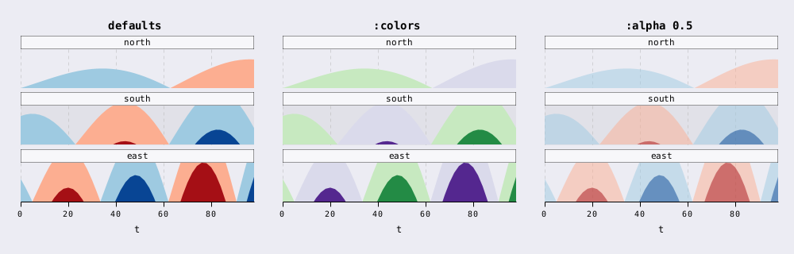

25 Builders: series
Builders of time series plots: the autocorrelation correlogram of a series of values, and horizon charts of one or more series. Each takes its data and an options map and returns an ordinary plot map; the series functions it forwards to are shared groups (Shared options).
(ns reference.builders-series
(:require [fastmath.core :as m]
[fastmath.random :as r]
[cljplot2.core :as plot]
[cljplot2.describe :as describe]
[notebook-utils :as nu]))An autoregressive series AR(1) with coefficient 0.7, 200 values - fastmath r/ar over seeded white noise:
(def ar1 (vec (take 200 (r/ar 0.7 (r/white-noise (r/rng :mersenne 11) 1.0)))))| value |
|---|
| -0.8681059991636939 |
| -0.13246657175036403 |
| -0.16733061455991885 |
| 0.2694449098582038 |
| 0.7626152170591383 |
| 1.1643101963530955 |
| 1.680869004658373 |
| 0.5178927660569208 |
| 1.560261885121078 |
| 2.4418647463226844 |
| 2.043455780603937 |
| 1.3350134131667004 |
| 1.354758198765417 |
| 2.1640502223875067 |
| 1.454799683098602 |
| 1.3371138223355488 |
| -0.33367593984463084 |
| -0.005741120165596719 |
| 0.7212290841961994 |
| -0.1195911846804324 |
| -0.6812899355665778 |
| -0.8392514895150631 |
| -0.9029773174253988 |
| 1.2775138991235113 |
| 1.3052496901727149 |
| 0.10749064244688167 |
| 2.182404272999568 |
| 0.8020152567350689 |
| 2.2480086429639803 |
| -0.5815891130571396 |
| -1.2200475860286044 |
| -0.9148598795692016 |
| -1.9929339785508062 |
| -1.167556833223004 |
| 1.1831111606916571 |
| 1.6305003825662951 |
| 0.4225635017131969 |
| -1.070811370568912 |
| 0.4073366876810065 |
| -0.07175255029977834 |
| 0.7898405901980585 |
| 0.8608244191036003 |
| -0.005997950498821458 |
| -0.5461824357074251 |
| 2.655506073055612 |
| 1.9812883429230417 |
| 0.948280488545405 |
| 0.9976731056744998 |
| -1.9587787208592302 |
| -3.5257537738930718 |
| -2.5932394631294877 |
| -1.249754246667226 |
| -2.1034623224484736 |
| -3.159937484622108 |
| -3.512030778343192 |
| -1.9824140637082557 |
| -2.7829299042529643 |
| -0.7251573880955828 |
| -2.072278723660861 |
| -1.0646342854393418 |
| -0.4425713020860106 |
| 2.3819350973526423 |
| 2.1408183231391726 |
| 2.454973829360471 |
| 1.4344731917553755 |
| 1.125009999016245 |
| 0.3900070091799304 |
| -0.7798167218950482 |
| -0.3342879904823223 |
| -1.2177391464355098 |
| 0.830731254431112 |
| 0.10821172392000628 |
| 1.2554472029584907 |
| 2.055272585431415 |
| 1.9197473121469386 |
| 1.5763890837670425 |
| 0.23473624714674302 |
| -0.4411380370130055 |
| 0.03595011068533288 |
| 0.5780803296515352 |
| 1.976207445760896 |
| 1.2935392991386372 |
| 0.8185818425230671 |
| 1.3847837486133925 |
| 0.5583438287031932 |
| 0.7293396933606422 |
| 1.0648721217498003 |
| 0.9532085696520289 |
| -1.4352271508574979 |
| -1.2974772446685645 |
| -2.1190706412323617 |
| -1.1131573532939294 |
| -0.9832765035361701 |
| -2.403094269423963 |
| -0.5890607058790454 |
| -1.0802952423453056 |
| 0.04424478384844799 |
| 0.26756324821161415 |
| -0.8344349067989484 |
| -1.0274184534958086 |
| … |
25.1 acf
The autocorrelation (ACF) and partial autocorrelation (PACF) of a series of numbers by lag: a stem per lag, a significance band around zero, the lags outside it marked (lag 0, always 1, is not marked).
| Option | Type | Default | Description |
|---|---|---|---|
| :correlograms | one of :both :acf :pacf or nil | :both | the correlograms drawn: :both (ACF above PACF), :acf or :pacf |
| :band | one of :smooth :stepped or nil | :smooth | significance band: :smooth (a ribbon through the lags) or :stepped (a block per lag) |
| :colors | map | colours of the stems and points, the band and the significant lags' points | |
| :colors :stem | a clojure2d color or :none | [0 114 178] | colour of the stems and points |
| :colors :band | a clojure2d color or :none | [0 114 178] | colour of the significance band |
| :colors :significant | a clojure2d color or :none | [215 48 39] | colour of the points of lags outside the band |
(plot/render-image (plot/acf ar1) {:width 700 :height 500})
One correlogram - the ACF (:acf) or the PACF (:pacf) - and the band as a block per lag (:stepped); the default :both draws ACF above PACF, the band :smooth:
(plot/render-image (plot/arrange [(plot/acf ar1 {:correlograms :acf :band :stepped :title ":correlograms :acf, :band :stepped"})
(plot/acf ar1 {:correlograms :pacf :title ":correlograms :pacf"})]
{:columns 2})
{:width 1000 :height 300})
The colours of the stems, the band and the significant lags:
(plot/render-image (plot/acf ar1 {:correlograms :both :lags 30
:colors {:stem [90 90 90] :band [230 150 40] :significant [40 150 60]}
:title ":colors"})
{:width 700 :height 500})
The lag points draw in the theme style [:chart :acf-point] (a scatter style over [:chart :scatter]; their colours are the :colors option):
| Option | Type | Default | Description |
|---|---|---|---|
| :size | a non-negative number | 5 | point size in pixels (a mapped :size wins) |
| :color | a clojure2d color or :none | [0 114 178 180] | point colour (a mapped :color wins) |
| :stroke-color | a clojure2d color or :none | :none | outline colour: a colour or :none |
| :stroke-width | a non-negative number | 1 | outline width in pixels |
| :shape | a shape character or shape map | \O | point shape (a mapped :shape wins) |
| :alpha | a number in [0 1] or nil | the colours' own alpha | opacity of every point colour, mapped, NA or not, and of the legend keys (the outline keeps its own) |
Larger triangle points through the theme:
(plot/render-image (plot/acf ar1 {:correlograms :acf :theme {:chart {:acf-point {:size 8 :shape \A}}}})
{:width 700 :height 360})
Shared options: Autocorrelation rows (:lags :level); Builder options (:title :scales :theme).
25.2 horizon
Horizon charts: each series folded into bands of equal height - values above the first band drawn over it in a darker colour, negative values mirrored up in reds - so a series takes a fraction of its height. The data are rows with x, y and (several series) a series column.
| Option | Type | Default | Description |
|---|---|---|---|
| :colors | map | band colours per sign, lightest first, at least :bands colours each | |
| :colors :positive | sequential of a clojure2d color or :none | :bands blues from [158 202 225] to [8 69 148] | colours of the positive bands, lightest first |
| :colors :negative | sequential of a clojure2d color or :none | :bands reds from [252 174 145] to [165 15 21] | colours of the negative (mirrored) bands, lightest first |
| :alpha | a number in [0 1] | 1.0 | fill alpha of the bands (translucent bands show the ones beneath) |
(def waves (for [[i series] (map-indexed vector ["north" "south" "east"]) t (range 0 100 2)]
{:t t :series series
:v (m/* (m/inc i) (m/sin (m/+ (m/* (m/+ 0.05 (m/* 0.03 i)) t) (m/* 1.3 i))) (m/inc (m/* 0.01 t)))}))| t | series | v |
|---|---|---|
| 0 | north | 0.0 |
| 2 | north | 0.10183008497976472 |
| 4 | north | 0.20661610402686367 |
| 6 | north | 0.31325141906102 |
| 8 | north | 0.42057180969334257 |
| 10 | north | 0.5273680924646234 |
| 12 | north | 0.6323995702024398 |
| 14 | north | 0.7344081634509679 |
| 16 | north | 0.8321330654434463 |
| 18 | north | 0.9243257533604304 |
| 20 | north | 1.0097651817694757 |
| 22 | north | 1.0872729792749511 |
| 24 | north | 1.1557284665993608 |
| 26 | north | 1.2140833136256632 |
| 28 | north | 1.2613756543852293 |
| 30 | north | 1.2967434825852708 |
| 32 | north | 1.3194371560147868 |
| 34 | north | 1.3288308460063079 |
| 36 | north | 1.3244327779943452 |
| 38 | north | 1.305894121008632 |
| 40 | north | 1.2730163975559543 |
| 42 | north | 1.2257573006414006 |
| 44 | north | 1.1642348215002096 |
| 46 | north | 1.0887296097780113 |
| 48 | north | 0.9996855072157029 |
| 50 | north | 0.8977082161559347 |
| 52 | north | 0.7835620851686256 |
| 54 | north | 0.6581650155600979 |
| 56 | north | 0.5225815142432113 |
| 58 | north | 0.37801394015809153 |
| 60 | north | 0.22579201289578754 |
| 62 | north | 0.0673606731419306 |
| 64 | north | -0.09573359522123134 |
| 66 | north | -0.2618578522777928 |
| 68 | north | -0.42930905140507725 |
| 70 | north | -0.5963314870723538 |
| 72 | north | -0.7611351624671462 |
| 74 | north | -0.9219148851807785 |
| 76 | north | -1.0768698880591858 |
| 78 | north | -1.224223763347474 |
| 80 | north | -1.3622444915542709 |
| 82 | north | -1.4892643421372278 |
| 84 | north | -1.603699421241002 |
| 86 | north | -1.704068642353986 |
| 88 | north | -1.78901189891229 |
| 90 | north | -1.8573072235636843 |
| 92 | north | -1.9078867269762518 |
| 94 | north | -1.9398511196743555 |
| 96 | north | -1.9524826333182475 |
| 98 | north | -1.9452561729961784 |
| 0 | south | 1.927116370834386 |
| 2 | south | 2.0274914613597557 |
| 4 | south | 2.07748266641869 |
| 6 | south | 2.0737768064330546 |
| 8 | south | 2.014448430287953 |
| 10 | south | 1.8990606066275224 |
| 12 | south | 1.7287259629250822 |
| 14 | south | 1.5061251389165777 |
| 16 | south | 1.235480985529041 |
| 18 | south | 0.9224880782003472 |
| 20 | south | 0.5741983901135568 |
| 22 | south | 0.19886525029505664 |
| 24 | south | -0.19425104300774482 |
| 26 | south | -0.5951114081561804 |
| 28 | south | -0.9931543499308296 |
| 30 | south | -1.377573966362083 |
| 32 | south | -1.73761228107695 |
| 34 | south | -2.0628580172475854 |
| 36 | south | -2.343543568845214 |
| 38 | south | -2.570831790758949 |
| 40 | south | -2.7370843294622715 |
| 42 | south | -2.8361035518292965 |
| 44 | south | -2.8633406963019015 |
| 46 | south | -2.816063656168469 |
| 48 | south | -2.693478791142663 |
| 50 | south | -2.4968023266717037 |
| 52 | south | -2.229278211026796 |
| 54 | south | -1.896140724170266 |
| 56 | south | -1.5045216318441865 |
| 58 | south | -1.063303212728876 |
| 60 | south | -0.5829200136707068 |
| 62 | south | -0.07511366517530942 |
| 64 | south | 0.4473535254084403 |
| 66 | south | 0.9710192324671676 |
| 68 | south | 1.48206796802804 |
| 70 | south | 1.9666951989198806 |
| 72 | south | 2.4114791376904576 |
| 74 | south | 2.803750220572462 |
| 76 | south | 3.131948154193266 |
| 78 | south | 3.3859565569693078 |
| 80 | south | 3.5574056419572013 |
| 82 | south | 3.6399340784710743 |
| 84 | south | 3.629402115594036 |
| 86 | south | 3.5240492301271233 |
| 88 | south | 3.3245909460791916 |
| 90 | south | 3.0342510279692627 |
| 92 | south | 2.658726936228712 |
| 94 | south | 2.20608820588743 |
| 96 | south | 1.6866092224779732 |
| 98 | south | 1.112539672851955 |
| … | … | … |
(plot/render-image (plot/horizon waves {:x :t :y :v :series :series :bands 3}) {:width 700 :height 300})
Two bands (the default; left - blues and reds), own band colours per sign, lightest first (middle), and translucent bands showing the ones beneath (right):
(plot/render-image (plot/arrange [(plot/horizon waves {:x :t :y :v :series :series :title "defaults"})
(plot/horizon waves {:x :t :y :v :series :series
:colors {:positive [[199 233 192] [35 139 69]]
:negative [[218 218 235] [84 39 143]]}
:title ":colors"})
(plot/horizon waves {:x :t :y :v :series :series :alpha 0.5 :title ":alpha 0.5"})]
{:columns 3})
{:width 1000 :height 320})
Shared options: Horizon rows (:x :y :series :bands :band-height :interpolator :steps-per-gap); Builder options (:title :scales :theme).
source: notebooks/reference/builders_series.clj